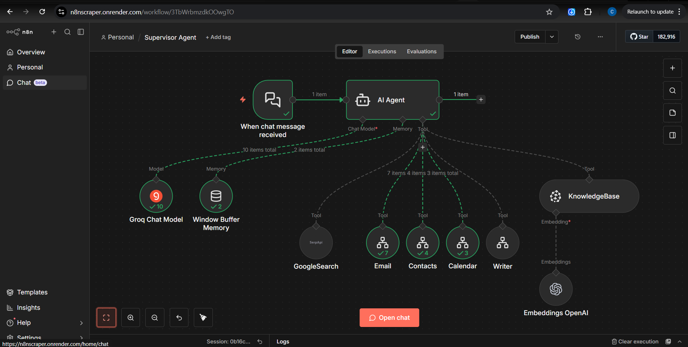

Multi-Tool Supervisor AI Assistant (with RAG)
A centralized, chat-driven AI agent capable of autonomous reasoning and tool use. It dynamically decides whether to search the web, query an internal RAG knowledge base, or execute administrative actions via API integrations (email, contacts, calendar, writing).

Key Capabilities
Supervisor Orchestration
An AI Agent node evaluates intent and delegates tasks across a toolset—deciding when to retrieve knowledge, browse the web, or trigger ops actions.
Memory for Multi-Turn Chats
Maintains conversational context using a Window Buffer Memory so follow-ups, preferences, and partial tasks stay coherent.
Internal Knowledge via RAG
Uses a Knowledge Base tool powered by OpenAI embeddings to retrieve grounded answers from internal documentation.
External Knowledge Search
Fetches real-time web information through Google Search (SerpAPI), then summarizes or routes results into follow-on actions.
Ops Automation Tools
Connects API-driven tools (email, calendar, contacts, writer) to draft messages, schedule meetings, and execute admin tasks.
Agentic Prompt Patterns
Uses ReAct-style reasoning/acting patterns so the agent selects the right tools based on context, not a fixed script.
Workflow Logic Map
- 1) Event Trigger: A chat interface listens for incoming natural language requests.
- 2) Supervisor Orchestration: The AI Agent node evaluates intent and plans tool usage.
- 3) Cognitive Engine & Memory: A Groq chat model powers fast reasoning, with Window Buffer Memory for continuity.
- 4) Dynamic Tool Execution: Routes to RAG, web search, or ops automation APIs—sometimes chaining multiple tools.
Outcomes & Job Alignment
Advanced RAG Implementation
Demonstrates retrieval-augmented generation with vector embeddings, grounding answers in internal knowledge instead of relying on baseline model behavior.
Complex Agentic Workflows
Shows multi-tool planning and orchestration using ReAct prompt patterns and dynamic delegation.
API + Ops Automation
Integrates multiple external APIs (Search, Email, Calendar, OpenAI, Groq) into one workflow to reduce operational friction.